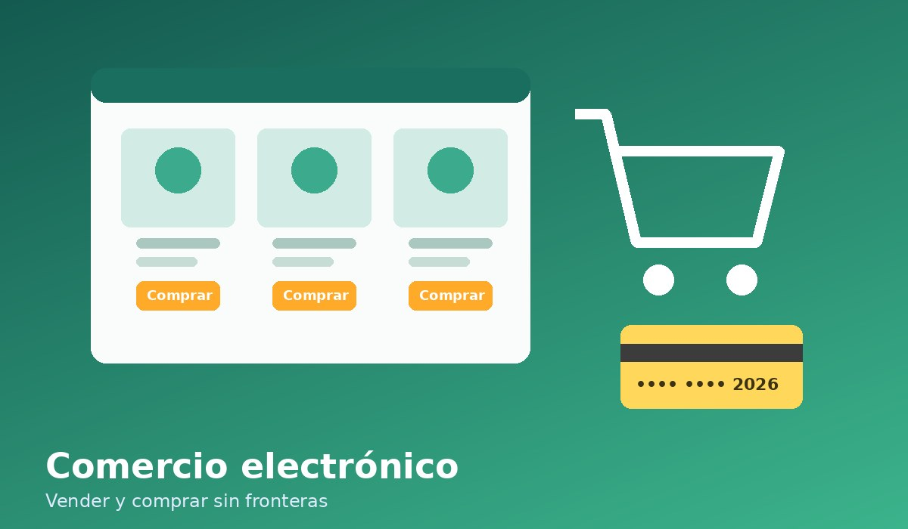
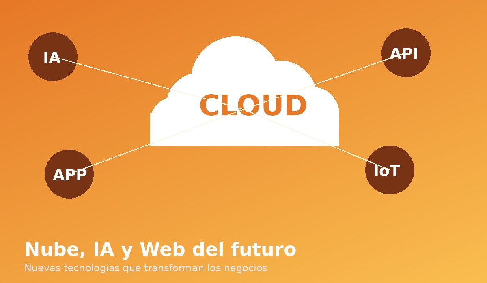

La Web y los negocios
Las empresas usan sitios web y tiendas en línea para llegar a más clientes y reducir costos.

Principales cambios
- Comercio electrónico: tiendas abiertas las 24 horas.
- Marketing digital: publicidad en buscadores y redes sociales.
- Teletrabajo: equipos que colaboran a distancia.

Modelos de comercio electrónico
| Modelo | Significado | Ejemplo |
|---|---|---|
| B2C | Empresa vende a consumidores. | Tienda de ropa en línea. |
| B2B | Empresa vende a otra empresa. | Proveedor de insumos. |
| C2C | Consumidores venden entre sí. | Clasificados en línea. |